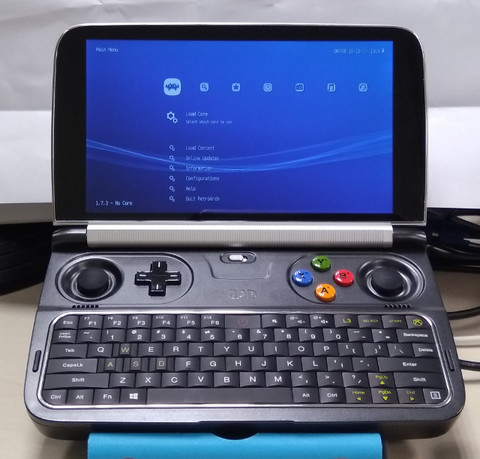
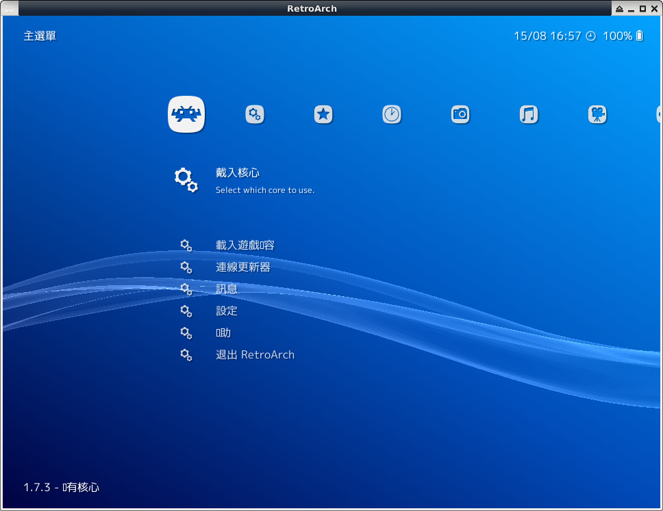
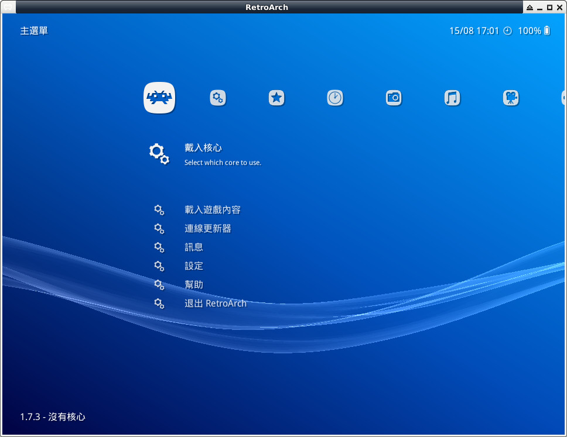

$ sudo apt-get install debhelper dh-exec libasound2-dev libavcodec-dev libavdevice-dev libavformat-dev libavutil-dev libc6-dev libdrm-dev libegl1-mesa-dev libfreetype6-dev libgbm-dev libjack-jackd2-dev libopenal-dev libpulse-dev libsdl2-dev libswscale-dev libudev-dev libusb-1.0-0-dev libv4l-dev libxinerama-dev libxml2-dev libxv-dev libxxf86vm-dev pkg-config python3-dev x11proto-xext-dev zlib1g-dev devscripts git nvidia-cg-toolkit fonts-droid $ cd $ git clone https://github.com/libretro/RetroArch $ cd RetroArch $ ./fetch-submodules.sh $ ./configure $ make $ mkdir -p ~/.config/retroarch/assets/ $ cp -a media/assets/* ~/.config/retroarch/assets/ $ ./retroarch


$ cp /usr/share/fonts-droid/truetype/DroidSansFallback.ttf ~/.config/retroarch/assets/xmb/monochrome/font.ttf
完成
